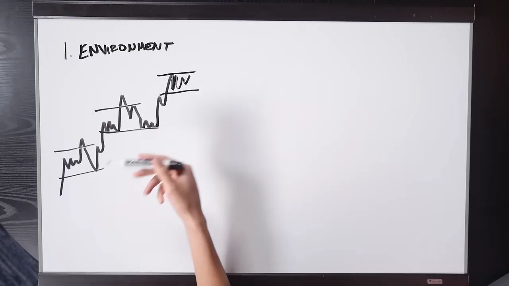
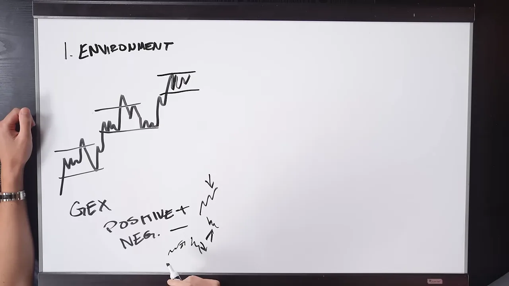
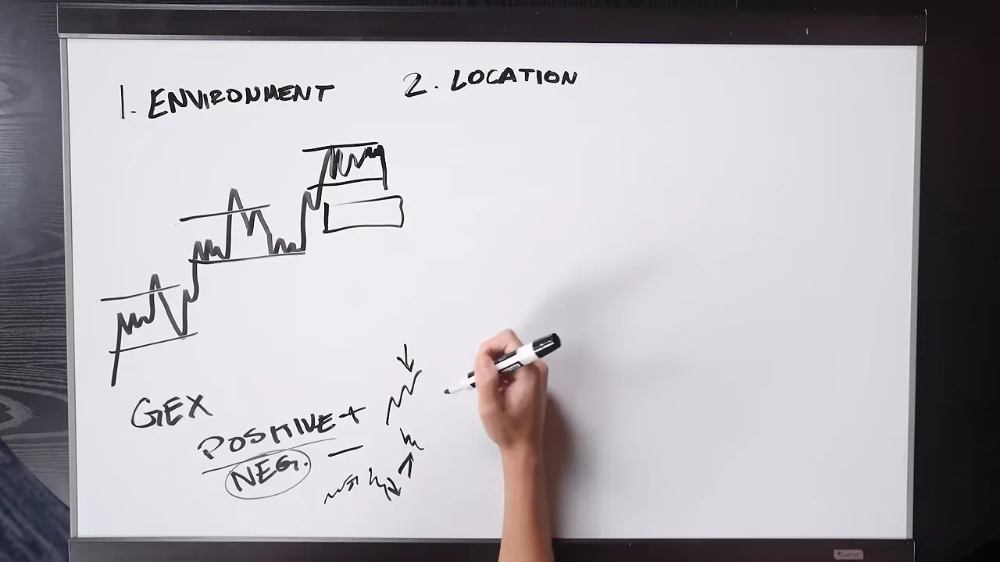
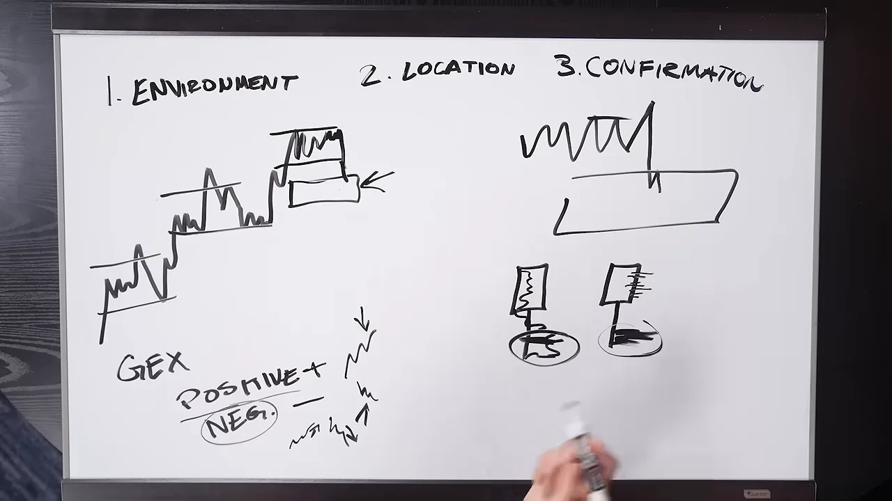
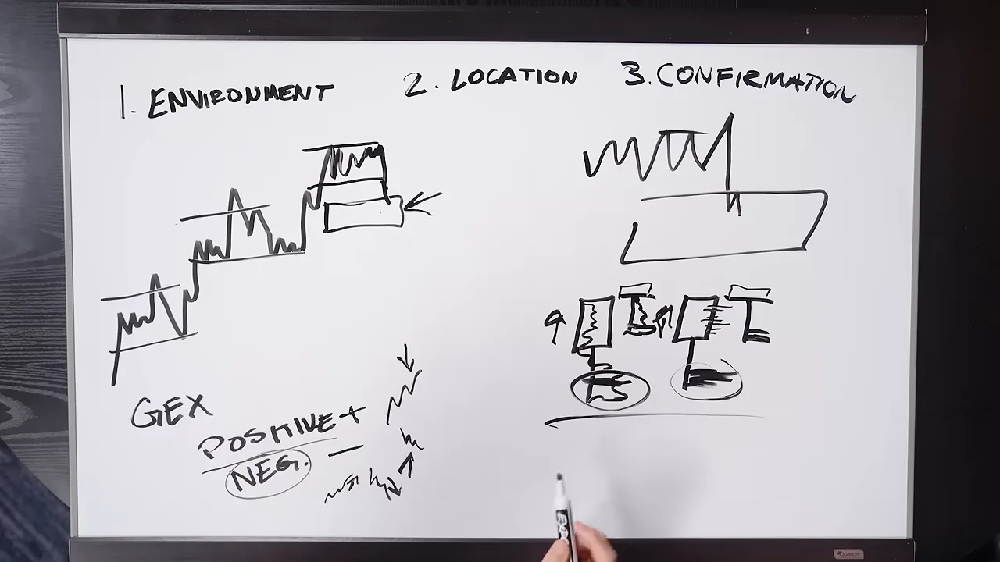
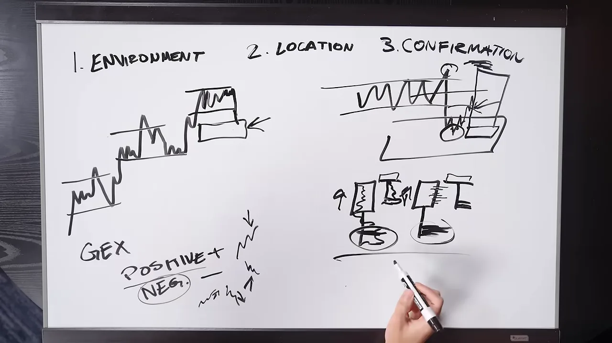
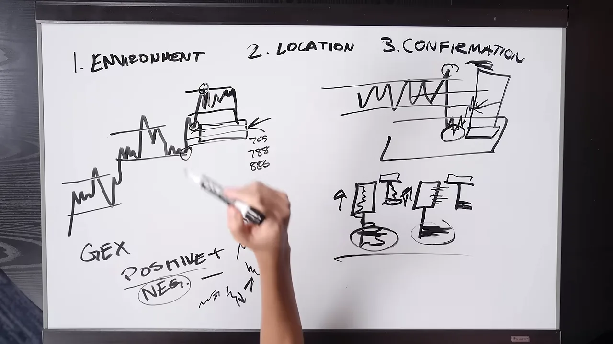
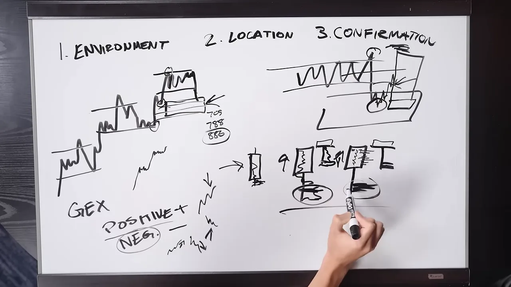
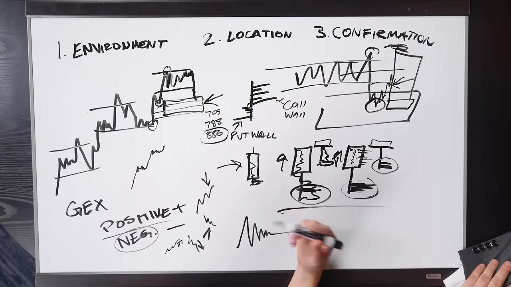
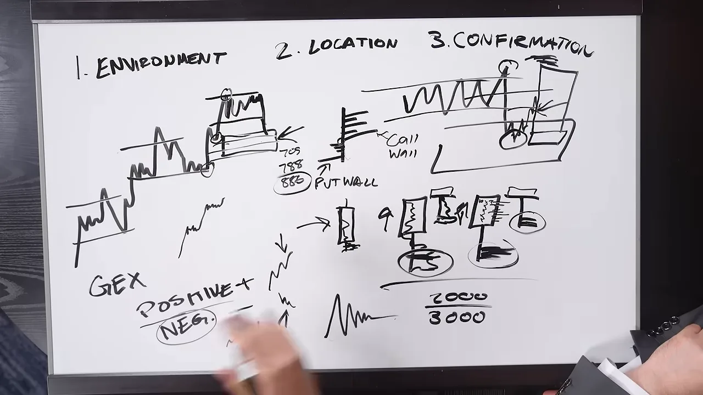

셋업보다 '누가 몰리는가'를 먼저 봐요
크리스 크리머는 2026년 7월 로빈스 월드컵 트레이딩 대회의 월간 마이크로 데이트레이딩 부문에서 한 달 100%를 내고 1위를 했어요. 26살이에요. 진행자가 "무엇이 딸깍 맞아떨어졌냐"고 묻자, 그는 셋업 얘기가 아니라 질문이 바뀐 얘기를 해요.
처음에는 전략을 이것저것 갈아탔어요. 딱 맞는 캔들 패턴 하나만 찾으면 계속 반복해서 돈을 벌 수 있다고 믿었대요. 그러다 질문을 바꿨어요. 나는 지금 무엇에 참여하고 있는지, 반대편 참여자는 누구고 무엇을 하려는지, 그 사람들의 한계는 뭐고 어디서 어쩔 수 없이 움직여야 하는지를 먼저 묻는 거예요. 이렇게 판을 읽고 나면 진입 셋업은 전체의 마지막 5~10%가 돼요. 이미 세운 아이디어가 맞는지 틀린지 확인하는 단계일 뿐이라는 거예요.
the money is the byproduct of proper execution
돈은 제대로 된 실행의 부산물이에요.
— 영상 04:30
강제 참여와 갇힌 참여자
그는 뉴욕장 개장 뒤 1시간 30분만 거래하는 데이트레이더예요. 가끔 아시아 세션도 해요. 시장을 경매로 보고, 그 안에서 '강제 참여'가 일어나는 순간을 찾아요. 아래 그림은 그가 말로 설명한 흐름을 네 칸으로 옮긴 거예요.
균형 상태에서는 매수자와 매도자가 한 범위 안에서 편하게 포지션을 쌓아요. 시장의 목적이 자산의 가치를 정하는 것이니, 잠시 서로 동의하는 구간이에요. 그러다 한쪽이 더 공격적으로 나오면 반대편은 세 가지 중 하나를 골라야 해요. 버티거나, 물을 타거나, 손절하거나요. 매수 포지션을 정리하려면 팔아야 하니까, 손절 자체가 가격을 더 밀어요.
크리스는 균형 구간에서는 거래하지 않아요. 한쪽 끝에서 참여가 강제되기 시작할 때, 그리고 그 시도가 실패할 때를 봐요. 실패하면 '갇힌 참여자'가 생기고, 그들이 빠져나오면서 반대쪽으로 움직임이 생겨요. 그래서 홈런을 칠 필요가 없어요. 50~100포인트만 노려요.
1단계 환경: 가치 구조와 감마
진행자가 화이트보드로 자리를 옮기자고 하자, 크리스는 과정을 세 단계로 나눠요. 환경(Environment), 위치(Location), 확인(Confirmation)이에요. 처음엔 '맥락, 위치, 확인'이라고도 불러요. 첫 단계인 환경에는 두 가지를 봐요. 상위 시간봉의 가치 구조, 그리고 감마 노출이에요.
가치 구조: 가치가 어디로 옮겨 가고 있나
보드 왼쪽 위의 계단 모양이 '가치 상승 구조'예요. 가로선 두 줄로 묶은 구간이 가치가 만들어진 곳이고, 그 구간이 계단처럼 한 칸씩 위로 옮겨 가요. 맨 오른쪽 위 칸은 지금 새 가치를 찾고 있는 곳이에요.

반대로 가치가 아래로 옮겨 가면 가치 하락 구조, 어느 쪽도 아니면 횡보예요. 기본적인 시장 구조, 즉 고점·저점이 높아지는지 낮아지는지를 보는 거라고 해요.
감마 노출(GEX): 오늘은 변동성이 눌릴까, 커질까
옵션 시장은 거래 규모가 가장 큰 시장 중 하나예요. 옵션 주문을 받아 주는 딜러와 마켓 메이커는 방향에 베팅하는 게 본업이 아니라서, 중립을 지키려고 선물 같은 기초자산으로 헤지해요. 이 헤지가 어느 방향으로 일어나는지가 감마 노출의 부호에 따라 갈려요.
보드 아래쪽에 GEX라고 쓰고 Positive(+)와 Neg.(-)를 나눠 적었어요. 그 옆 작은 지그재그 두 개가 각각 눌린 움직임과 커진 움직임을 표시한 거예요.

두 환경에서 딜러가 어떻게 움직이는지 나란히 그려 보면 차이가 분명해요.
그가 이걸 챙기는 이유는 개인 트레이더 계좌를 가장 많이 망가뜨리는 게 횡보장이기 때문이에요. 다들 돌파 매매를 좋아하는데, 양의 감마일 때는 돌파를 시도할 때마다 딜러가 위에서 팔고 아래에서 사니 돌파가 계속 실패하기 쉬워요.
그는 웹 플랫폼 Tanuki Trade의 '나이브 GEX'를 써요. 단순한 가정으로 계산한 값이에요. 더 세밀한 '추론 GEX'는 딜러 포지션을 모델로 추정하지만, 그 바탕인 Cboe 데이터가 비싸요. 대개 S&P 500 쪽만 다루고 월 300달러쯤 든대요. 그는 나스닥 선물을 거래하고, 풋 월이나 콜 월에서 튕기는 레벨을 정확히 맞히려는 게 아니라 환경만 알면 되니 나이브 방식으로 충분하다고 해요.
콜 월, 풋 월, 그리고 양과 음이 바뀌는 경계인 감마 플립 구간도 확인해요. 이 모든 걸 장 시작 전에 끝내요. 가격이 정신없이 움직이는 동안에는 절대 하지 않고, 버튼을 누르기 전에 시나리오를 미리 세워 둬요.
2단계 위치: 어디서 거래할까
두 번째 단계인 위치는 차트에 박스 하나 그리는 얘기가 아니에요. '어디서 장사할지'를 정하는 거예요. 가치 상승 구조라면 그 흐름을 거스르지 않고, 추세를 따라 살 곳을 찾아요. 문제는 어디서 사느냐예요.
이미 많이 오른 꼭대기는 비싼 자리예요. 그는 할인된 곳까지 내려오기를 기다려요. 기준은 밸류 에어리어예요. 그 아래는 디스카운트, 위는 프리미엄이에요.
보드에서는 계단 맨 위 가치 구간 바로 아래에 직사각형 박스를 하나 그렸어요. 박스 옆 화살표가 가리키는 곳이 그가 '장사할' 디스카운트 구간이에요.

빠르게 지나간 구간은 '비효율적'이에요
예시 하루를 따라가 봐요. 아시아 세션이 가격을 빠르게 끌어올리고, 런던 세션은 그 위에서 범위를 만들어요. 아시아 세션이 급하게 밀어 올린 구간은 가격이 머문 시간이 짧아서 거래가 거의 없었어요. 그는 이걸 움직임의 '비효율적인' 부분이라고 불러요. 거래량이 적게 쌓인 저거래량 노드이기도 해요.
뉴욕장이 열리고 가격이 떨어지기 시작해 밸류 에어리어 하단을 깨고 디스카운트로 들어온다고 해 봐요. 많은 사람이 여기서 매도하지만, 그는 오히려 여기서 사는 게 가장 좋은 자리라고 봐요. 다만 위치만으로 들어가지는 않아요. 그 다음이 확인 단계예요.
3단계 확인: 흡수와 주도권 전환
세 번째 단계는 확인이에요. 차트에 박스를 그렸다고 가격이 그 박스를 존중해 주지는 않아요. 그래서 그 구간 안에서 매수자와 매도자가 무엇을 하는지, 누가 이기는지, 그 노력에 결과가 따라오는지를 봐요. 여기서부터는 훨씬 촘촘하게 확대해서 봐요.
캔들 두 종류: 거래량 프로파일과 델타 프로파일
그는 5분봉을 두 가지 방식으로 띄워요. 하나는 캔들 안에 거래량 프로파일이, 다른 하나는 델타 프로파일이 들어 있어요. 일반 캔들의 시가·고가·저가·종가는 경매가 끝난 뒤의 '점수판'일 뿐이에요. 그 점수가 어떻게 만들어졌는지는 캔들 안을 봐야 알 수 있어요.
보드 오른쪽 아래의 캔들 두 개가 그 예시예요. 둘 다 아래꼬리가 길어요. 왼쪽 캔들은 꼬리 끝에 거래량이 몰려 있고(동그라미), 오른쪽 캔들은 같은 자리에 음의 델타, 즉 공격적인 매도가 몰려 있어요(동그라미).

이게 흡수예요. 위치(디스카운트), 환경(가치 상승 구조), 그리고 캔들 끝에 쌓인 매도 공격이 아무 결과도 내지 못했다는 게 겹쳐요. 이제 매수자에게로 주도권이 넘어오는지를 봐요.
진입 순서와 손절 자리
그가 그린 순서를 따라가면 이래요.
flowchart TD A["디스카운트로 내려옴"] --> B["꼬리 끝에 매도 공격이 몰리지만 가격은 버팀 (흡수)"] B --> C["캔들이 양봉으로 마감"] C --> D["다음 캔들이 열리자마자 다시 밀림"] D --> E["매도 공격이 이번엔 더 높은 곳에서 실패"] E --> F["다시 양봉 전환 → 매수 진입"] F --> G["손절: 실패한 매도세 바로 아래"]
손절을 실패한 매도세 바로 아래에 두는 이유는 간단해요. 매도자가 처음에 넘지 못한 곳을 넘어선다면 아이디어 자체가 틀린 거니까요. 보드에서는 앞의 두 캔들 옆에 '다음 캔들'을 하나씩 짧게 덧그렸어요. 덧그린 캔들은 몸통 위쪽에 짧은 프로파일이 있는데, 매도세가 이번엔 더 높은 곳에서 실패했다는 표시예요.

진입하는 순간엔 매도 호가 쪽에 매수 우세가 불을 켜고, 매수자가 물량을 공격적으로 받아 가는 모습이 보일 수 있어요. 이때 처음 얘기한 '강제 참여'가 다시 등장해요. 디스카운트에서 공매도한 사람들은 손절하려면 사야 해요. 음의 감마 환경이라면 딜러까지 오를 때 사니, 움직임이 아주 빨라질 수 있어요.
진입 뒤에는 무엇을 보나
보드 위 확대 차트에는 진입 지점부터 밸류 에어리어 위쪽까지 박스가 그려져 있어요. 아래는 손절, 위는 목표예요.

보유하는 동안 그가 보는 것을 정리하면 이래요.
| 보이는 것 | 크리스가 하는 일 |
|---|---|
| 매수세가 공격하는데도 밸류 에어리어로 돌아가지 못해요 | 본전으로 옮기거나 매매를 끊어요 |
| 밸류 에어리어로 돌아가요 | POC나 스윙 고점을 목표로 해요 |
| 호가창에서 심리적 가격대·스윙 고점에 주문이 몰려 있어요 | 체결되려고 걸린 주문일 때가 많아서 목표로 삼아요 |
| 매수 공격이 계속되고 가격도 따라 올라가요 | 그 공격 뒤로 손절을 따라 올려요 |
| 매수자가 힘을 쓰는데 가격이 밸류 에어리어 아래에 머물러요 | 경고 신호로 보고 본전으로 옮겨요 |
보유 중에도 같은 풋프린트 캔들을 봐요. 매수·매도 체결량과 델타를 띄워 두고, 매수자의 노력이 실제 가격 상승이라는 결과로 이어지는지 확인해요. 그는 이게 아주 기본적인 아이디어라고 말해요. 상위 시간봉이 무엇을 하는지, 변동성 환경이 어떤지를 알고, 그 위에서 확인될 때만 움직이는 거예요. 옵션 그릭스까지 들어가면 훨씬 깊어지지만 이 자리에서는 다루지 않아요.
디스카운트 구역과 흡수를 더 정확히
그림이 끝나자 진행자가 빈틈을 하나씩 물어요. 디스카운트 구역은 정확히 어떻게 정하는지, '내부 구조'란 뭔지, 흡수는 어떻게 알아보는지예요.
디스카운트 구역: 피보나치 0.705 · 0.788 · 0.886
그는 피보나치 되돌림을 써요. 스윙 저점에서 스윙 고점까지 긋고, 0.705, 0.788, 0.886 세 레벨로 구역을 만들어요. 흔히 말하는 '골든 포켓' 같은 개념이라고 해요. 보드에서는 디스카운트 박스 오른쪽에 세 숫자를 적고, 886에 동그라미를 쳤어요.

조건이 두 개 더 붙어요. 먼저 이 구역이 밸류 에어리어 밖에 있어야 해요. 피보나치 레벨이 밸류 에어리어 안에 걸리면 쓰지 않아요. 그리고 디스카운트에 들어오기 전에 '내부 구조'가 있어야 해요. 거창한 게 아니라 스윙 포인트 하나예요. 시장은 일직선으로 오르지 않고 숨을 쉬듯 되돌림을 만드니까, 그 되돌림의 고점·저점이 있어야 피보나치를 그을 수 있어요.
0.886이 중요한 이유는 그의 방식대로라면 반등이 그 전에 나와야 하기 때문이에요. 매도세가 들어오는데 매수자가 주도권을 되찾지 못하고 0.886 아래로 내려가면 아이디어가 무효가 돼요. 되돌림 뒤 반등은 밸류 에어리어 아래로 내려가는 경매가 실패한 직후에 나와야 한다는 거예요.
흡수는 곧 반전이 아니에요
그는 1시간봉과 15분봉을 보고, 매매는 5분봉으로 해요. 가끔 1분봉도 봐요. 진행자가 '거래량·델타가 아래꼬리에 있어야 하냐'고 묻자, 극단에 몰려 있고 그게 실패해야 한다고 고쳐 말해요.
보드 가운데에 새로 그린 캔들이 그 반례예요. 음봉으로, 그것도 힘 있게 마감했는데 아래꼬리가 있고 매도 참여가 꼬리 쪽에 쌓여 있어요. 흡수가 일어나고 있을 수는 있지만, 이것만으로는 반전이라고 볼 수 없어요.

필요한 건 주도권이 반대로 넘어가는 모습이에요. 캔들 극단(꼬리)에서 공격적인 매도가 보이고, 그 뒤의 가격이 '그 자리에서 흡수가 있었고 이제 주도권이 바뀐다'는 걸 확인해 줘야 해요. 호가창을 직접 볼 수도 있지만, 아이스버그 주문과 알고리즘 주문이 너무 빨리 들어와서 그는 두 캔들을 조합해 보는 쪽을 택했어요. 누적 거래량 델타를 쓰는 사람도 있다고 해요.
매수·매도 체결 캔들에서 굵은 숫자
델타 캔들은 가격대마다 델타를 사다리처럼 보여 줘요. 공격적인 매도가 더 많으면 음수가 돼요. 아직 그리지 않은 세 번째 캔들은 매수·매도 체결량(bid × ask)을 숫자로 보여 주는데, 그는 한쪽이 400% 이상 우세하면 숫자를 굵게 표시하는 지표를 써요.
읽는 법이 처음엔 헷갈려요. 매도 호가(ask)에 걸린 지정가 주문은 공격적인 매수자가 와야만 체결돼요. 그래서 오른쪽 칸은 공격적 매수, 왼쪽 칸은 공격적 매도예요. 굵은 숫자가 반대편으로 켜지기 시작하면 진짜 매수 공격이 돌아왔다는 뜻이에요. 그래도 바로 들어가지 않아요. 가격이 출렁일 수 있으니, 매도세가 한 번 더 시도했다가 두 번째로 실패하고 다시 뒤집힐 때 들어가요.
손익비·승률, 그리고 손대지 않는 날
진행자가 목표를 정하는 체계적인 방법이 있는지, 아니면 재량인지 물어요. 그는 대개 스윙 포인트를 노린다고 답해요. 시장이 스윙 포인트를 가져가지 않으면 평평한 선이 될 텐데, 시장은 그렇게 움직이지 않는다는 거예요.
보드 아래 가운데의 꺾인 선이 그 말을 그린 거예요. 크게 출렁이다 납작해지는 모양이에요. 위쪽에는 앞의 GEX 단계에서 말한 콜 월과 풋 월을 막대 모양으로 새로 표시했어요.

1.5R · 승률 65% · 프로핏 팩터 1.8
그가 밝힌 숫자는 이래요. 결과는 대개 1.5~2R, 승률은 60~65%, 프로핏 팩터는 1.8 안팎이에요. 손익비가 엄청 크진 않지만 이걸로 충분하대요.
1.5R이 맞는 이유로 프롭펌 규칙을 들어요. 5만 달러 계좌라면 허용 손실(드로다운)이 2,000달러예요. 계좌의 1%인 20달러만 걸어서는 아무것도 못 하니 더 크게 걸어야 해요. 그런데 목표 수익이 3,000달러라면 둘의 비율이 바로 1.5R이에요. 보드에 적은 2000 / 3000이 그 계산이에요.

영상에 나온 숫자를 직접 넣어 볼 수 있게 만들었어요. 평균 수익과 승률을 바꾸면, 1R을 걸었을 때 한 번 매매의 기대값과 프로핏 팩터(총수익 ÷ 총손실)가 바뀌어요. 손실은 언제나 1R로 끊는다고 가정해요.
매매 한 번의 기대값 0R
프로핏 팩터 0
100번 매매하면 0R
- 그대로 1.5R, 65%에 두면 프로핏 팩터가 약 2.8이 나와요. 크리스가 말한 1.8보다 높아요. 손절을 따라 올리다 보면 실제 평균 수익이 1.5R보다 작아지는 매매가 섞인다는 뜻으로 읽을 수 있어요.
- 평균 수익을 1.0R로 내려 보세요. 프로핏 팩터가 1.8 근처가 돼요.
- 평균 수익을 6R로 올리고 승률을 25%로 내려 보세요. 기대값은 비슷하게 플러스지만 넷 중 셋은 지는 매매예요. 그가 초보에게 큰 R을 권하지 않는 이유예요.
멋진 R보다 맞히는 쪽
그는 10R, 20R짜리 매매나 바닥을 정확히 잡은 작은 손절을 자랑하는 사람들을 언급해요. 자기는 멋있어 보이고 싶은 게 아니라 맞고 싶대요. 확인을 하나 더 기다리느라 손익비가 나빠져도 상관없어요. 큰 R을 노리면 이기는 매매가 크긴 해도 지는 매매가 연달아 나와요. 초보는 그걸 버티지 못하고 홧김에 아무 매매나 하다가 계좌를 날려요. 프롭펌에서 수익금을 한 번도 못 찾는 사람 대부분이 이렇다고 해요.
이 전략은 평가 계좌와 실계좌, 개인 계좌에서 다 쓰고, 평가 계좌에서는 아주 공격적으로 해요. 대회에서도 이 방식 그대로 거래했대요. 다만 매번 틀에 찍은 듯 똑같지는 않아요. 그의 목표는 결국 '노력 대비 결과'를 읽는 거예요. 누가 힘을 쓰는데 가격이 따라오고, 누가 안 따라오는지요.
가장 좋은 결정은 대개 '안 하기'
트레이더의 가장 큰 무기는 참여할지 말지를 고를 수 있다는 거예요. 오더플로를 쓰기 시작하면 정보가 많아져서 거래가 늘거나, 반대로 줄어요. 그는 거래를 걸러 내는 데 써요. 어떤 날은 0번, 어떤 날은 1~2번 거래해요. 연달아 결정을 내리면 집중력과 판단력이 닳기 때문이에요.
0.886 말고 매매를 통째로 접는 조건도 하나 있어요. 참여가 적을 때예요. 그는 마이크로 나스닥 선물(MNQ(Micro E-mini Nasdaq-100 futures))의 오더플로를 봐요. 많은 사람이 원 계약(NQ(E-mini Nasdaq-100 futures))을 봐야 한다고 하지만, 자기에겐 이게 맞는대요.
- MNQ 5분봉 하나의 거래량이 2만 계약 아래로 떨어지면 손대지 않아요
- 그때는 참여자가 빠져나가는 중이고, 대개 점심시간이 다가오는 때예요
- 느리게 기어가며 거래량이 줄어드는 장에서는 이 방식이 통하지 않아요
- 그래서 하루 1시간 30분만 거래해요. 차트는 계속 보지만 참여는 거래량이 많을 때만 해요
나쁜 손실을 줄이는 게 실력이에요
화이트보드에서 내려와 진행자가 묻어요. 이 과정을 따라 하고 싶은 사람은 어떻게 연습하면 되냐고요. 크리스는 프롭펌으로 돈을 벌기 위해 세계 최고의 트레이더가 될 필요는 없다고 답해요. 경매 시장 이론을 배우고, 오더플로 플랫폼을 깔고, 리플레이 모드로 반복하면 된대요. 자료는 인터넷에 충분하다고요.
그런데 그는 바로 덧붙여요. 수익을 내는 트레이더가 되는 건 그게 핵심이 아니라고요.
A · B · C 게임: A를 늘리지 말고 C를 없애요
그는 하루하루를 A·B·C 게임으로 나눠요. 기준은 손익이 아니라 얼마나 제대로 실행했느냐예요.
A+ 셋업이 몇 번 오는지는 통제할 수 없어요. 통제할 수 있는 건 '멍청한 손실', 즉 사업 비용이 아니었던 불필요한 손실이에요. 수익을 못 내는 트레이더 대부분이 여기 걸려 있다고 해요. 프롭펌 업계의 호황·불황 순환도 여기서 나와요. 평가를 통과해서 실계좌를 받고, 나흘째에 C게임 한 번으로 계좌를 날리는 식이에요. 많은 사람이 지식, 정보, 전략, 셋업이 더 필요하다고 믿지만 그게 아니라고 그는 말해요.
좋은 손실과 나쁜 손실
| 좋은 손실 | 나쁜 손실 | |
|---|---|---|
| 무슨 일이 있었나 | 규칙대로 실행했는데 졌어요. 망설이지도, 쫓아가지도, 일찍 들어가지도 않았어요 | 규칙을 굽혀서 들어갔어요 |
| 크리스의 예 | 보드에 그린 셋업을 그대로 따랐는데 손절 났어요 | 디스카운트에 왔다는 이유만으로 흡수·주도권 전환 확인 없이 '오르겠지' 하고 들어갔어요 |
| 왜 생기나 | 확률 게임이라 분산이 있어요. 모든 매매를 이길 수는 없어요 | 큰 움직임을 놓쳤거나, 남들 수익 인증을 보고 조급해져서요 |
| 이기면? | — | 이겨도 나쁜 매매예요. 나쁜 버릇을 강화하니까요 |
나쁜 손실은 연쇄로 이어져요. 규칙을 안 지켜서 잃으면 화가 나고, 빨간 손익이 불편해서 만회하려 들고, 결국 틸트에 빠져 계좌가 사라져요. 그날이 C게임이 돼요.
규칙은 행동이 붙어 있어야 해요
'과매매하지 마라', '사이즈 키우지 마라'는 규칙이 아니라고 해요. 규칙에는 구체적인 행동이 붙어 있어야 하고, 자기에게 맞아야 해요. 그가 규칙을 만드는 순서를 정리하면 이래요.
flowchart LR A["매매 기록을 모아요"] --> B["계산된 결정이 감정적 결정으로 바뀌는 선을 찾아요"] B --> C["그 선 앞에서 멈추는 행동을 규칙으로 정해요"] C --> D1["장 시작 1시간 30분 뒤 강제 종료"] C --> D2["2연패면 그날 끝"]
그 선은 사람마다 달라요. 어떤 사람은 일정 손실 금액, 어떤 사람은 본전 매매 횟수나 연패 횟수예요. 너무 많이 이겨서 과신하는 것도 선이 될 수 있어요. 문제는 이게 본인 눈에는 잘 안 보인다는 거예요. 틸트에 빠진 사람에게 어디서부터 무너졌냐고 물으면 크게 잃은 매매를 가리키지만, 진짜 시작은 그 전의 어떤 사건이에요. 사이즈를 키우고 손절을 지운 데는 이유가 있다는 거예요.
크리스는 기록을 보다가 장 시작 1시간 30분이 지나면 성적이 확 나빠진다는 걸 발견했어요. 집중력이 떨어져서인지, 아침의 큰 움직임을 놓치고 억지로 뭔가를 찾아서인지는 모르지만, 좋지 않다는 건 확실했어요. 그래서 강제 종료 시각을 정했어요. 3연패를 하면 반반 확률로 나쁜 결정을 하기 시작한다는 것도 알아요. 애초에 그의 방식으로 1시간 안에 좋은 셋업이 세 번 나올 가능성은 낮고요. 그래서 2연패에서 멈춰요.
이렇게 선을 찾는 데 아주 오래 걸렸고, 돈도 많이 잃었대요. 그리고 마지막엔 결국 스스로 멈출 수 있어야 해요. 자제력이 없으면 트레이딩은 맞지 않는다고 단호하게 말해요. 돈과 감정이 섞이면 많은 사람에게서 도박 같은 행동이 나오기 때문이에요.
빚에서 우승까지, 그리고 초보에게
요즘은 언제 화가 나냐고 묻자, 하지 말아야 할 걸 했을 때만이라고 답해요. 일찍 들어가거나, 쫓아가거나, 확인 대신 짐작으로 들어가는 실수를 하면 그날은 바로 접어요. 그리고 다시는 돌아가고 싶지 않은 시절을 떠올려요.
돈에 집중하던 시절
그가 들려준 과정을 시간 순서로 놓으면 이래요.
timeline 시작 : 직장을 그만두고 여행 : 인스타그램에서 '15분에 4만 달러'를 보고 데이트레이딩을 배우기 시작 바닥 : 모은 돈을 다 잃음 : 빚을 지고 수입이 없음 : 약세장에서 코인을 팔아 버팀 전환 : 문제는 '돈에 집중하는 것'이라고 진단 : 프롭펌 계좌에서 마이크로 1계약으로 실행만 반복 지금 : 실행에 집중하자 돈이 부산물로 따라옴 : 2026년 7월 월간 마이크로 부문 1위
그는 서부에 살아서 매일 새벽 4시, 4시 반에 일어나요. 오랫동안 매일 일어나서 돈을 잃고, 하루 종일 괴로워하고, 다음 날 또 그랬대요. 사람들이 "트레이딩은 잘 돼?" 하고 물으면 너무 부끄러워서 대화를 끊었어요. 스스로가 실패자 같았고 역겨웠다고 해요.
너무 많은 돈과 시간을 쏟은 뒤라, 알아내든지 아니면 전부 잃든지 하겠다고 결심했대요. 무모한 결정이었다고 본인도 인정해요. 다만 시장과 더 공격적으로 싸운 게 아니라 관점을 바꿨어요. 마이크로 1계약으로 줄이면 평가 통과도, 수익금 인출도 안 되지만 반복 연습은 돼요. 돈이라는 개념을 최대한 빼고 실행만 봤어요. 실행이 제대로 되자 돈이 부산물로 따라왔고, 그 뒤로는 반복과, 변동성 같은 시장 환경 변화에 맞춰 조정하는 것만 남았어요.
돈을 아예 신경 안 쓰는 건 아니에요. 돈을 벌려고 트레이딩하니까요. 달라진 건 무엇에 더 신경 쓰느냐예요. 지금은 그날의 손익보다 얼마나 제대로 실행했는지를 훨씬 더 중요하게 봐요.
다시 시작한다면
- 무엇에 참여하는지부터 이해해요 — 시장은 자기 자신뿐 아니라 다른 참여자들과 겨루는 경매예요. 개인도 있고, 큰 물량을 채워야 하는 기관도 있어요. 무엇이 가격을 움직이는지 모른 채 선부터 긋고, 선이 안 맞는다고 화내지 말래요.
- 성격에 맞는 전략 하나를 골라요 — 매일 셋업이 쏟아지는 전략이 맞지 않는 사람도 있고, 순간 판단을 잘 견디는 사람도 있어요. 약점과 강점을 함께 고려해서 골라요.
- 갈아타지 말고 실행에만 집중해요 — 유튜브에서 '이 셋업 하나가 인생을 바꿨다'는 영상을 보고 하나씩 옮겨 다니면, 전략끼리 서로 다른 말을 해서 오히려 망가져요. 제대로 실행해 봐야 그 전략이 엉터리인지도 알 수 있어요.
힘든 트레이더에게
마지막 조언은 솔직해지라는 거예요. 대부분 정보가 부족해서 힘들다고 믿지만, 실은 행동의 문제인 경우가 많대요. 안타깝지만 트레이딩이 맞지 않는 사람도 있다고 해요. 인터넷에는 이기는 사람만 보이지만 대부분 힘들어하니 혼자가 아니라는 말도 덧붙여요. 그런 걸 그만 보고, 자신을 자신에게서 지켜 줄 체계를 갖추고, 계속 하라고요.
Size all the way down to the point where this size is almost insulting to you.
모욕적으로 느껴질 만큼 사이즈를 끝까지 줄이세요.
— 영상 57:10
그렇게 한 달을 보내면 인증할 만한 손익은 안 나오지만, 실행에 집중할 수 있고 올바른 습관이 쌓인다는 게 그의 마지막 말이에요.